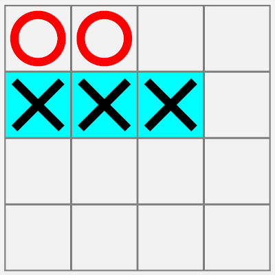
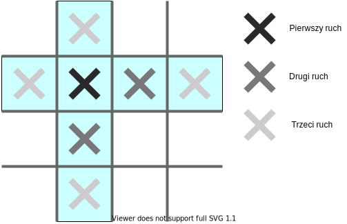

W tym wpisie przyjrzymy się trudnościom które występują podczas implementacji algorytmu alfa-beta dla gry kółko i krzyżyk. Nie będę tutaj omawiał samego algorytmu, gdyż został on już dobrze opisany w wielu innych miejscach, między innymi na Ważniaku. Zamiast tego skoncentrujemy się na technikach debugowania które można będzie wykorzystać również przy innych grach np. warcabach.
Kod algorytmów alfa-beta i minimax jest powszechnie dostępny w internecie czy to w postaci pseudokodu czy jako gotowa implementacja na GitHubie.
W trakcie przygotowań do stworzenia tego artykułu, ja również napisałem prostą implementację gry w kółko i krzyżyk. Kod mojej wersji algorytmu alfa-beta, podobnie jak cała gra, dostępny jest na GitHubie.
W dalszej części artykułu założymy że posiadana przez nas implementacja algorytmu alfa-beta jest poprawna, a mimo to program nie wykonuje prawidłowych ruchów podczas gry.
Heurystyka czyli Serce algorytmu
Najważniejszą częścią algorytmu alfa-beta jest heurystyka czyli funkcja oceniająca stan gry z punktu widzenia danego gracza. Ogólna sygnatura heurystyki wygląda następująco:
double score(GameState gameState, Player player)Większe wartości zwracane przez funkcję odpowiadają lepszej sytuacji gracza na planszy i na odwrót im mniejsza wartość zwrócona tym położenie gracza jest gorsze.
Czasami przekazujemy do heurystyki również inne pomocnicze informacje, na przykład ostatni wykonany przez gracza ruch, jeżeli może to przyspieszyć wykonywanie obliczeń. Sama funkcja może również zwracać więcej danych niż tylko samą ocenę sytuacji na polu gry. Przykładowo heurystyka może zwracać informację o zakończeniu gry i jej ewentualnym zwycięscy. Wiele zależy tutaj od konkretnej gry, w przypadku gry w kółko i krzyżyk obie te optymalizacje są możliwe.
W przypadku planszy 3x3 prosta heurystyka która zwraca 1 gdy gracz
wygrał i 0 w przeciwnym wypadku, w połączeniu z algorytmem alfa-beta
tworzy program z którym nie sposób wygrać.
Na koniec uwaga techniczna. Nakreślona powyżej funkcja heurystyki traktuje w taki sam sposób zarówno gracza MAX jak i gracza MIN. Dla poprawności działania algorytmu alfa-beta konieczne jest zanegowanie wyniku zwróconego przez heurystykę dla gracza MIN:
var score = score(gameState, currentPlayer);
score = maximizingPlayer ? score : -score;Plansza 4x4, 3 pod rząd wygrywają
Uruchomienie powyższego algorytmu na planszy 4x4, gdy pierwszy ruch należy do użytkownika przynosi jednak opłakane rezultaty. Program zajmuje po prostu kolejne pola na planszy, a my nie mamy najmniejszego problemu z wygraną.
 X - Użytkownik, O - Komputer
Dlaczego tak się dzieje? Okazuje się że przy grze 4x4, 3 pod rząd istnieje strategia wygrywająca która pozwala pierwszemu graczowi wygrać w dokładnie 3 ruchach: 
Z punktu widzenia algorytmu minimax każdy ruch skutkuje przegraną, dlatego algorytm wybierze pierwszy lub ostatni ruch (w zależności od implementacji). Pozwolę sobie nazwać to zjawisko depresją, chociaż nie jest to powszechnie przyjęta terminologia.
Istnieje bardzo prosty sposób na wykrycie zjawiska depresji - wystarczy zamienić kolejność graczy tj. pozwolić komputerowi wykonać pierwszy ruch. Jeżeli spowoduje to nagłą poprawę sposobu działania algorytmu należy sprawdzić czy przypadkiem gra nie faworyzuje gracza wykonującego ruch jako pierwszy.
Istnieje jeszcze jedno proste ulepszenie które możemy wykonać.
Mianowicie jeżeli pozwolimy algorytmowi grać samemu ze sobą to
okaże się że “nie spieszy mu się do wygranej”:
 Ludzie zachowują się inaczej, chcemy wygrać jak najszybciej,
w jak najmniejszej ilości ruchów.
Możemy dodać to zachowanie do naszego algorytmu, modyfikując
funkcję heurystyki tak żeby “karała” gracza za każdy wykonany ruch.
Alternatywnie heurystyka może nagradzać gracza za każde
pozostawione wolne pole na planszy:
Ludzie zachowują się inaczej, chcemy wygrać jak najszybciej,
w jak najmniejszej ilości ruchów.
Możemy dodać to zachowanie do naszego algorytmu, modyfikując
funkcję heurystyki tak żeby “karała” gracza za każdy wykonany ruch.
Alternatywnie heurystyka może nagradzać gracza za każde
pozostawione wolne pole na planszy:
double impatientPlayerHeuristics(GameState gameState, Player player) {
var score = score(gameState, currentPlayer);
var freePlaces = gameState.board.countFreePlaces();
return score + freePlaces*Q;
}Stałą Q musimy dobrać w taki sposób żeby wartość
wyrażenia freePlaces*Q nigdy
nie przekraczała wartości zwracanej w przypadku wygranej przez
funkcję score.
Na przykład jeżeli dla wygranej heurystyka zwraca 1000.0 to użycie
Q = 1.0 jest rozsądnym wyborem.
Na koniec zauważmy że plansza 5x5, 3 pod rząd zawiera w sobie planszę 4x4, 3 pod rząd, dlatego wszystko co powiedzieliśmy tutaj o zjawisku depresji odnosi się również do niej.
Plansza 4x4, 4 pod rząd wygrywają
W przypadku plansz 4x4 i większych kluczowym problemem staje się wydajność. Prostym sposobem na poradzenie sobie z tym problemem jest rezygnacja z analizy całego drzewa gry i skupienie się na pierwszych N ruchach wykonywanych przez graczy. W tym wypadku dobór odpowiedniej heurystyki staje się jeszcze ważniejszy ponieważ oceniać musimy nie tylko gry zakończone, ale również takie które wciąż trwają. Z drugiej strony nadmierne skomplikowanie heurystyki negatywnie wpływa na złożoność obliczeniową i co za tym idzie, na czas oczekiwania na wybór ruchu.
Jako kompromis możemy przyjąć na przykład analizę jedynie siedmiu
posunięć graczy w przyszłość, przy jednoczesnym rozbudowaniu heurystyki
o punktowanie “prawie zwycięstw”. Prawie zwycięstwo to sytuacja na
planszy która w wyniku jednego ruchu czy posunięcia gracza zmienia się
w wygraną. W przypadku planszy 4x4, 4 pod rząd możemy przyjąć
że rząd, kolumna lub przekątna złożona z trzech znaków gracza i wolnego
miejsca jest prawie zwycięstwem np. X _ X X jest prawie zwycięstwem
dla gracza X.
W przypadku optymalizacji bardziej skomplikowanych gier nie obejdziemy się bez dodatkowych narzędzi takich jak np. profiler. Jednym z najlepszych, darmowych profilerów dostępnych na rynku dla platformy JVM jest async-profiler.
Możemy również dużo zyskać unikając nadmiernych alokacji pamięci. Na przykład zamiast tworzyć nową niemutowalną planszę za każdym razem gdy symulujemy ruch gracza, możemy wykorzystać mutowalną strukturę danych wraz z wycofywaniem ruchów (ang. backtracking):
for (Move playerMove: movesToCheck) {
// Modify board in place
board.put(playerMove.position, playerMove.mark);
// Do recursive minimax call and other stuff
// Restore board state
board.removeMark(playerMove.position)
}Plansza 5x5, 4 lub 5 pod rząd wygrywają
Na tym poziomie wydajność staje się elementem kluczowym. Duża wielkość drzewa gry sprawia że strategie bazujące na prawdopodobieństwie zaczynają wyglądać coraz bardziej interesująco. Na przykład możemy użyć następującego algorytmu bazującego na metodzie Monte Carlo, do wygenerowania listy ruchów które będziemy oceniać:
Set<Moves> getMovesToCheck(Board board, int depth) {
// Cutoff - use heuristics to evaluate the board
if (depth > 8) {
return Set.of();
}
// For the first three player moves we analyze every possibility
var allPossibleMoves = board.getMovesForAllFreeFields()
if (depth < 3) {
return allPossibleMoves;
}
// Take K random moves to analyze
return allPossibleMove.shuffle().take(K);
}W przypadku gdy algorytm zwróci pustą listę ruchów do sprawdzenia, po prostu oceniamy planszę za pomocą heurystyki i zwracamy to jako wynik (pamiętając o negacji dla gracza MIN) z wywołania funkcji minimax.
Jak to zdebugować? Generalne strategie debugowania
- Testy jednostkowe dla wykorzystywanych przez nas heurystyk to podstawa. Pisząc heurystyki dla gry kółko i krzyżyk bardzo łatwo o pomyłkę lub błąd w stylu “off by one”. Dodanie testów i upewnienie się że pokrycie kodu testami jest odpowiednio wysokie powinno być pierwszym działaniem jakie podejmujemy podczas debugowania.
- Nasza aplikacja powinna posiadać funkcję umożliwiającą cofnięcie ostatnich ruchów gracza. Znacznie ułatwi to debugowanie za pomocą debuggera. W przypadku bardziej skomplikowanych gier typu warcaby warto dodać opcję zapisu i odczytu stanu gry z pliku.
- Warto dodać opcję gry komputer vs komputer, jak również wyboru kto stawia pierwszy ruch. Pozwala to lepiej ocenić działanie algorytmu.
- Zwracając optymalny ruch algorytm minimax zwraca tak naprawdę ścieżkę od korzenia do liścia w drzewie gry (korzeń reprezentuje obecną sytuację na planszy, liść przyszłą wygraną lub remis). Warto zalogować taką informację wypisując ją na konsole, bądź zapisując do pliku. Pamiętajmy żeby zalogować tylko i wyłącznie ścieżkę dla wybranego ruchu. W przeciwnym wypadku możemy utonąć w powodzi informacji.
Na koniec zdradzę wam sekret debugowania, który pomoże wam rozwiązać nie jeden problem: “Co dwie głowy to nie jedna!”. Jeżeli masz problem którego nie potrafisz sam rozwiązać poproś drugą osobę o pomoc. I niech to nie będzie prośba na forum czy StackOverflow ale debugowanie ramie w ramie z drugim człowiekiem. To naprawdę działa i mówię to mając na karku kilka lat solidnej praktyki jako programista.
Przykładowa aplikacja
Kod przykładowej aplikacji można znaleźć na GitHubie.
Aplikację najlepiej otworzyć w IntelliJ, importując ją jako projekt Gradle. Do edycji GUI niezbędny jest SceneBuilder.
Jeżeli odkryjecie w aplikacji błąd proszę piszcie na 0xmarcin małpa gmail.com.
Sam kod aplikacji jest czytelny ale nie perfekcyjny. Jest jeszcze wiele rzeczy które chciałbym poprawić. Jeżeli widzicie miejsce które można poprawić nie bójcie się stworzyć pull request’a na GitHubie. Gwiazdki są również mile widziane ;)